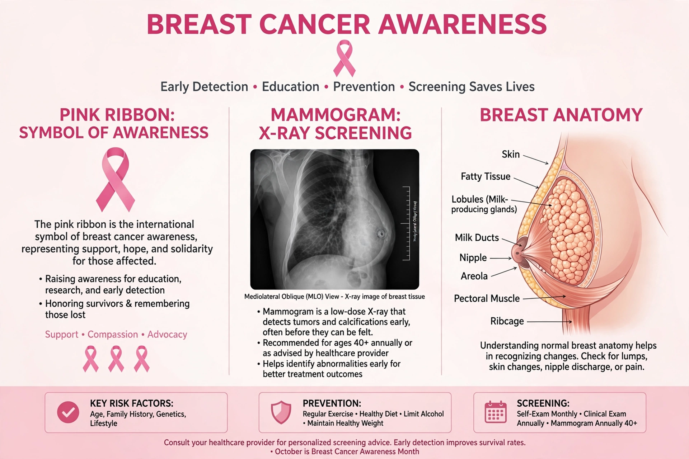

Breast cancer is cancer that develops from breast tissue. It is the most commonly diagnosed cancer in women worldwide and also occurs, rarely, in men. Signs may include a lump, change in shape, dimpling, nipple discharge or redness.

| Risk factors | Age, BRCA1/2, family history, alcohol, obesity, hormones |
|---|---|
| Diagnosis | Mammography, ultrasound, biopsy |
| Treatment | Surgery, radiation, chemotherapy, hormone / HER2 therapy |
Most are ductal or lobular carcinomas. Tumours are classified by hormone receptors (ER/PR) and HER2 status: hormone-receptor-positive, HER2-positive, and triple-negative, which guide treatment.
Mammographic screening reduces mortality but involves overdiagnosis. Treatment usually combines surgery (lumpectomy or mastectomy), radiotherapy, and systemic therapy — chemotherapy (regimens have included methotrexate in CMF), endocrine therapy (tamoxifen, aromatase inhibitors) and targeted drugs (trastuzumab, CDK4/6 inhibitors).
About 2.3 million women were diagnosed globally in 2022, with roughly 670,000 deaths. Survival exceeds 90% at five years when detected early in high-income countries.